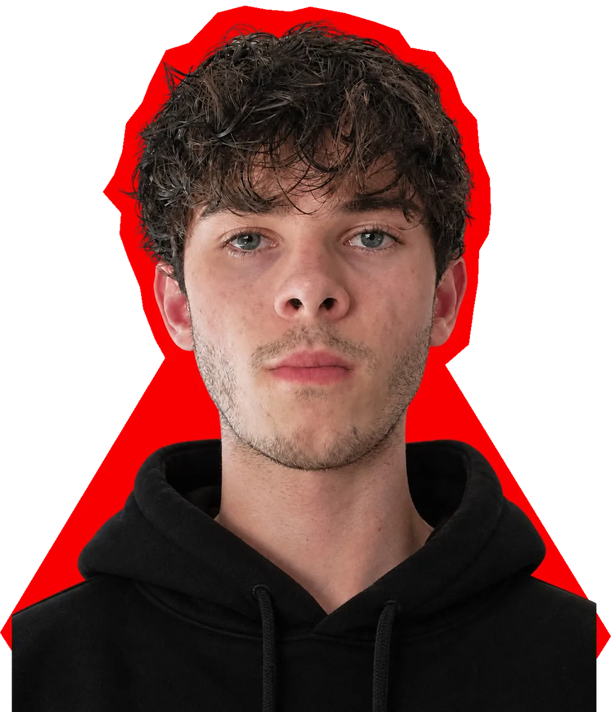

01
Inform
Digital design — UI/UX
A data-conscious educational app designed for South African university students.
Open case file
I make bold, typography-driven design: oversized letterforms, raw paper textures and a clean grid underneath every rough edge. Built to be noticed first and remembered after.
Scroll to the work01Selected work
Six projects across branding, packaging, editorial, digital and campaign design. Every project opens into a case file.
Digital design — UI/UX
A data-conscious educational app designed for South African university students.
Open case fileEditorial — Publication
An experimental publication exploring digital culture and life before the scroll.
Open case fileRebrand — Sustainable packaging
A refreshed banana brand and sustainable packaging project.
Open case fileCampaign — Art direction — Web
A scrapbook-inspired festival campaign for Rocking the Daisies 2027, built around the line “Memories That Stick” and carried into a campaign website built in Webflow.
Open case fileSocial awareness campaign
A social awareness campaign. What the habit is and who it speaks to.
Open case file02About
I’m a second-year graphic design student at Inscape Education Group, and I like my design loud.
Before Inscape, I studied at Table View High School. Typography has become the centre of how I work: big, heavy letterforms that do the talking, and experimental layouts that bend the grid without losing the message.
I’m into visual storytelling and bold graphic communication: work that pulls from grunge, halftone, graffiti and digital culture but still says something clear. Raw on the surface, structured underneath.
I’m still learning, and I push every brief a little further than the last.
03Skills & approach
Five disciplines, each one backed by a project in this portfolio. Follow the links to see the evidence.
Building identities from the mark up: logo, type, colour and the rules that hold them together.
Seen in Cradle, Lebombo Growers
Type as the main event. Expressive headlines, structured text and layouts with tension.
Seen in No Signal
Interfaces and websites designed around the people using them and the limits they work within.
Seen in Inform, Rocking the Daisies ’27
One idea, carried with the same voice across posters, social and screens.
Seen in Rocking the Daisies ’27, The Fridge Habit
Design that has to work on a shelf, in a hand and on paper, not only on screen.
Seen in Cradle, Lebombo Growers
04Contact
Got a design opportunity, a brief or a collaboration in mind? Send it my way.
hello@example.com